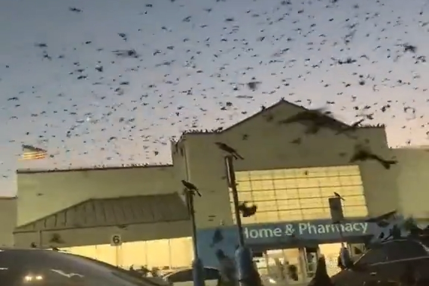

Hazel Katz: WHO GETS TO FLY
ACRE Projects is pleased to present Hazel Katz’s solo exhibition WHO GETS TO FLY, a multichannel video installation meandering through a cultural history of birds. The project examines the primary human-avian contradiction that birds are deployed as both symbols of settler empire and emblems of anticolonial resistance. The project is a sequel to Katz’s 2021 piece, WHO GETS TO DIE, a video essay about death and dying in culture, prison, and the films of Hilary Swank.
WHO GETS TO FLY, like its prequel, is inspired by the conspiracy theory Youtube format, in which every tangent is followed and every rumor is taken as encouragement to keep digging. In WHO GETS TO FLY, all narrative structure collapses as AI-fabricated voiceover artists flap in the wind, following barn swallow dinner frenzies and Canada goose migration passages.
While the voiceovers guide the audience through cultural documents of flying, spanning from the copaganda of both Top Gun films to Palestinian GoPro cinema of resistance, layers upon layers of moving images blend into each other and float along like clouds. Interspersed with found footage and archival film is the artist’s attempt to film the unfilmable – birds in flight – on her camcorder.
WHO GETS TO FLY was written, recorded, and edited during the height of Israel’s genocide in Gaza. Because of the western media’s blackout of Israel’s crimes, many have relied on social media for news from Palestine. But why do Americans think our distant witnessing is sufficient? While the Palestinian resistance fights the zionist occupation in sandals, distraught Americans voice their moral outrage online. While American artists parade in circles in the belly of the beast, freedom fighters in Gaza strap GoPros to their chest and record their courageous battles against the enemy, developing a robust revolutionary artistic culture, something virtually nonexistent in the US.
Katz shares:
“As I stew in the western Left’s overwhelming failure to stop the genocide, I simultaneously experience my attention span being blown to smithereens by the algorithms that determine our cultural consumption. Are these two realities interconnected? Are the algorithms that bring us news of the latest zionist massacre also responsible for our organizational ineptitude? After all, the zionist media conglomerates that censor news from Palestine are increasingly buying up the social media platforms that deliver us news from Gaza. Does the ubiquity of social media as dissociative entertainment negate any capacity it holds to be a medium of militant cultural work?
In crafting WHO GETS TO FLY, I explore how we might design politicized diatribes against the empire while also reflecting some of the lamentable conditions of exhibition that have been thrust onto us by the media monopolies: artificial intelligence, never-ending shortform video reels, always another app to open up, distractions from the distractions. How might we develop a revolutionary visual culture, piece by piece, one that’s designed with reel-addiction in mind: something swipeable, bingeable, trending?”